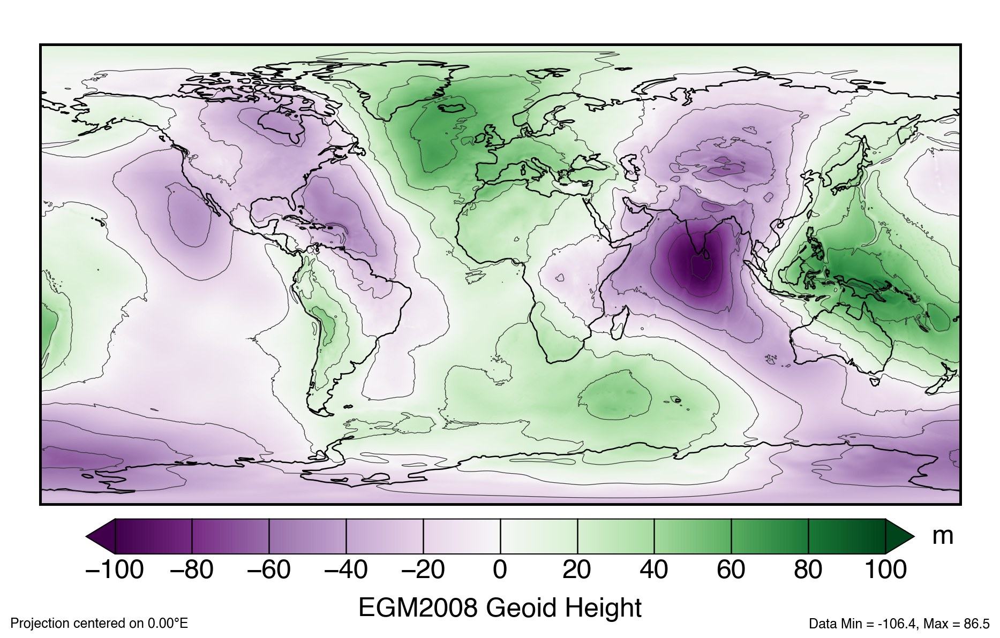
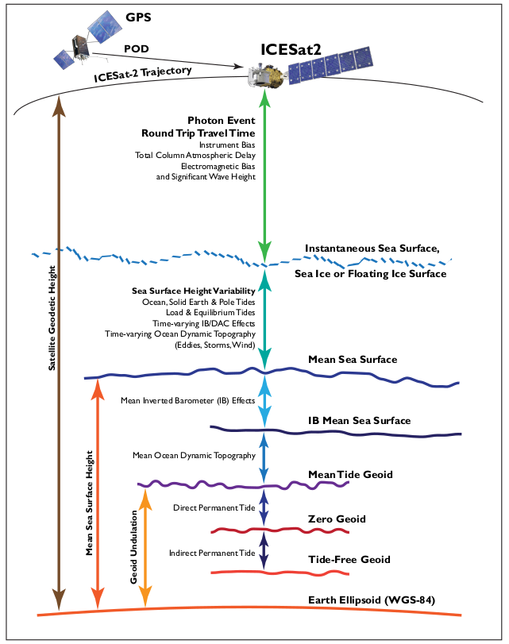

Geospatial Transformations In-depth
Contents
Geospatial Transformations In-depth¶
Instructors: Tyler Sutterley, Hannah Besso and Scott Henderson
Learning Objectives¶
Review fundamental concepts of coordinate reference systems (CRS)
Learn how to access coordinate reference metadata
Learn how to warp vector and raster data to different CRS
In this advanced and comprehensive notebook, we will explore coordinate systems, map projections, geophysical concepts and available geospatial software tools.
# We link to the documentation of these great libraries at the end of the notebook
import geopandas as gpd
import matplotlib.patches
import matplotlib.pyplot as plt
from mpl_toolkits import mplot3d
import netCDF4
import numpy as np
import os
import osgeo.gdal, osgeo.osr
import pyproj
import rasterio
import rasterio.features
import rasterio.warp
import re
import xarray as xr
import warnings
# import routines for this notebook
import utilities
from ATL06_to_dataframe import ATL06_to_dataframe
# turn off warnings
warnings.filterwarnings('ignore')
%matplotlib inline
Questions about space¶
Where is something located?
What is its height?
Does it have an extent or is it a point?
Let’s Start by Making a Map¶
Q: Why would we use maps to display geographic data?
fig,ax1 = plt.subplots(num=1, figsize=(10,4.55))
minlon,maxlon,minlat,maxlat = (-180,180,-90,90)
world = gpd.read_file(gpd.datasets.get_path('naturalearth_lowres'))
world.plot(ax=ax1, color='0.8', edgecolor='none')
# set x and y limits
ax1.set_xlim(minlon,maxlon)
ax1.set_ylim(minlat,maxlat)
ax1.set_aspect('equal', adjustable='box')
# add x and y labels
ax1.set_xlabel('Longitude')
ax1.set_ylabel('Latitude')
# adjust subplot and show
fig.subplots_adjust(left=0.06,right=0.98,bottom=0.08,top=0.98)
Geographic Coordinate Systems¶
Locations on Earth are usually specified in a geographic coordinate system consisting of
Longitude specifies the angle east and west from the Prime Meridian (102 meters east of the Royal Observatory at Greenwich)
Latitude specifies the angle north and south from the Equator
The map above projects geographic data from the Earth’s 3-dimensional geometry on to a flat surface. The three common types of projections are cylindric, conic and planar. Each type is a different way of flattening the Earth’s geometry into 2-dimensional space.
This map is in an Equirectangular Projection (Plate Carrée), where latitude and longitude are equally spaced. Equirectangular is cylindrical projection, which has benefits as latitudes and longitudes form straight lines. However, this projection distorts both shape and distance, particularly at higher latitudes.
fig,ax1 = plt.subplots(num=1, figsize=(10.375,5.0))
minlon,maxlon,minlat,maxlat = (-180,180,-90,90)
dlon,dlat = (1.0,1.0)
longitude = np.arange(minlon,maxlon+dlon,dlon)
latitude = np.arange(minlat,maxlat+dlat,dlat)
# calculate and plot grid area
gridlon,gridlat = np.meshgrid(longitude, latitude)
im = ax1.imshow(np.cos(gridlat*np.pi/180.0),
extent=(minlon,maxlon,minlat,maxlat),
interpolation='nearest',
cmap=plt.cm.get_cmap('plasma'),
origin='lower')
# add coastlines
world = gpd.read_file(gpd.datasets.get_path('naturalearth_lowres'))
world.plot(ax=ax1, color='none', edgecolor='black')
# set x and y limits
ax1.set_xlim(minlon,maxlon)
ax1.set_ylim(minlat,maxlat)
ax1.set_aspect('equal', adjustable='box')
# add x and y labels
ax1.set_xlabel('Longitude')
ax1.set_ylabel('Latitude')
# add colorbar
cbar = plt.colorbar(im, cax=fig.add_axes([0.92, 0.08, 0.025, 0.90]))
cbar.ax.set_ylabel('Normalized Grid Area')
cbar.solids.set_rasterized(True)
# adjust subplot and show
fig.subplots_adjust(left=0.06,right=0.9,bottom=0.08,top=0.98)
Notes on Projections¶
There is no perfect projection for all purposes
Not all maps are good for ocean or land navigation
Not all projections are good for polar mapping
Every projection will distort either shape, area, distance or direction
conformal projections minimize distortion in shape
equal-area projections minimize distortion in area
equidistant projections minimize distortion in distance
true-direction projections minimize distortion in direction
While there are projections that are better suited for specific purposes, choosing a map projection is a bit of an art 🦋

Q: What is your favorite projection? 🌎¶
Q: What projections do you use in your research? 🌏¶
Reference Systems and Datums¶
Coordinates are defined to be in reference to the origins of the coordinate system
Horizontally, coordinates are in reference to the Equator and the Prime Meridian
Vertically, heights are in reference to a datum
Two common vertical datums are the reference ellipsoid and the reference geoid.
What are they and what is the difference?
To first approximation, the Earth is a sphere (🐄) with a radius of 6371 kilometers.
To a better approximation, the Earth is a slightly flattened ellipsoid with the polar axis 22 kilometers shorter than the equatorial axis.
To an even better approximation, the Earth’s shape can be described using a reference geoid, which undulates 10s of meters above and below the reference ellipsoid. The difference in height between the ellipsoid and the geoid are known as geoid heights.
The geoid is an equipotential surface, perpendicular to the force of gravity at all points and with a constant geopotential. Reference ellipsoids and geoids are both created to largely coincide with mean sea level if the oceans were at rest.
An ellipsoid can be considered a simplification of a geoid.

PROJ hosts grids for shifting both the horizontal and vertical datum, such as gridded EGM2008 geoid height values
Additional geoid height values can be calculated at the International Centre for Global Earth Models (ICGEM)
Why Does This Matter?¶
ICESat-2 elevations are in reference to the WGS84 (G1150) ellipsoid. ICESat-2 data products also include geoid heights from the EGM2008 geoid. Different ground-based, airborne or satellite-derived elevations may use a separate datum entirely. Elevations have to be in the same reference frame when comparing heights.
Different datums have different purposes. Heights above mean sea level are needed for ocean and sea ice heights, and are also commonly used for terrestrial mapping (e.g. as elevations of mountains). Ellipsoidal heights are commonly used for estimating land ice height change.
Q: What datum is right for me?¶
If it is useful to be in reference to sea level: be in reference to the geoid
If that doesn’t matter: can be in reference to the ellipsoid
If comparing datasets: have everything be in the same datum

Terrestrial Reference System¶
Locations of satellites are determined in an Earth-centered cartesian coordinate system
X, Y, and Z measurements from the Earth’s center of mass
Presently ICESat-2 is set in the 2014 realization of the International Terrestrial Reference Frame (ITRF). Other satellite and airborne altimetry missions may be in a different ITRF.
As opposed to simple vertical offsets, changing the terrestrial reference system can involve both translation and rotation of the reference system. This involves converting from a geographic coordinate system into a Cartesian coordinate system.
The NSIDC IceFlow API will standardize data from NASA altimetry missions to a single ITRF realization.
Let’s visualize what the Cartesian coordinate system looks like:
def to_cartesian(lon,lat,h=0.0,a_axis=6378137.0,flat=1.0/298.257223563):
"""
Converts geodetic coordinates to Cartesian coordinates
Inputs:
lon: longitude (degrees east)
lat: latitude (degrees north)
Options:
h: height above ellipsoid (or sphere)
a_axis: semimajor axis of the ellipsoid (default: WGS84)
* for spherical coordinates set to radius of the Earth
flat: ellipsoidal flattening (default: WGS84)
* for spherical coordinates set to 0
"""
# verify axes
lon = np.atleast_1d(lon)
lat = np.atleast_1d(lat)
# fix coordinates to be 0:360
lon[lon < 0] += 360.0
# Linear eccentricity and first numerical eccentricity
lin_ecc = np.sqrt((2.0*flat - flat**2)*a_axis**2)
ecc1 = lin_ecc/a_axis
# convert from geodetic latitude to geocentric latitude
dtr = np.pi/180.0
# geodetic latitude in radians
latitude_geodetic_rad = lat*dtr
# prime vertical radius of curvature
N = a_axis/np.sqrt(1.0 - ecc1**2.0*np.sin(latitude_geodetic_rad)**2.0)
# calculate X, Y and Z from geodetic latitude and longitude
X = (N + h) * np.cos(latitude_geodetic_rad) * np.cos(lon*dtr)
Y = (N + h) * np.cos(latitude_geodetic_rad) * np.sin(lon*dtr)
Z = (N * (1.0 - ecc1**2.0) + h) * np.sin(latitude_geodetic_rad)
# return the cartesian coordinates
return (X,Y,Z)
fig,ax2 = plt.subplots(num=2, subplot_kw=dict(projection='3d'))
minlon,maxlon,minlat,maxlat = (-180,180,-90,90)
dlon,dlat = (10.0,10.0)
longitude = np.arange(minlon,maxlon+dlon,dlon)
latitude = np.arange(minlat,maxlat+dlat,dlat)
# calculate and plot grid area
gridlon,gridlat = np.meshgrid(longitude, latitude)
X,Y,Z = to_cartesian(gridlon,gridlat)
ax2.scatter3D(X, Y, Z, c=gridlat)
plt.show()
Yep, that looks like an ellipsoid
Permanent Tidal Systems¶
Tides on the Earth are caused by the gravitational forces of the Sun and Moon.
Q: What do you think of when you think of tides?
In addition to the ups and downs of tides, there is considerable part that does not vary in time, a permanent tide that is due to the Earth being in the presence of the Sun and Moon. The Earth is lower in polar areas and higher in equatorial areas than it would without those gravitational effects. In effect, the Earth’s crust and geoid have more of an equatorial bulge.
All of the the tidal effects, the periodic and the permanent, are typically removed from a geoid model. These geoid models are tide-free.
For most use cases in the real world, we want to include the permanent tide as part of the geoid because it reflects the Earth as it is, in the solar system with the sun 🌞 and the moon 🌜.
Since Release-4, the EGM2008 geoid heights provided in ICESat-2 products have used a tide-free system. There is a parameter included in the ICESat-2 products for converting back to a mean tide system, which restores the permanent tide components and coincides with with mean sea level.
minlon,maxlon,minlat,maxlat = (-180,180,-90,90)
dlon,dlat = (1.0,1.0)
longitude = np.arange(minlon,maxlon+dlon,dlon)
latitude = np.arange(minlat,maxlat+dlat,dlat)
# calculate and plot permanent tide transformation
gridlon,gridlat = np.meshgrid(longitude, latitude)
theta = np.pi*(90.0 - gridlat)/180.0
# unnormalized Legendre polynomial of degree 2
P2 = 0.5*(3.0*np.cos(theta)**2 - 1.0)
# love number of degree 2 (IERS standards)
k2 = 0.3
# transformations for changing from tide-free to different permanent tides
geoid_free2mean = -0.198*(1.0 + k2)*P2
geoid_free2zero = -0.198*k2*P2
geoid_zero2mean = -0.198*P2
# plot geoid conversion from free2mean (same as in ICESat-2 products)
fig,ax1 = plt.subplots(num=1, figsize=(10.375,5.0))
im = ax1.imshow(100.0*geoid_free2mean,
extent=(minlon,maxlon,minlat,maxlat),
interpolation='nearest',
cmap=plt.cm.get_cmap('plasma'),
origin='lower')
# add coastlines
world = gpd.read_file(gpd.datasets.get_path('naturalearth_lowres'))
world.plot(ax=ax1, color='none', edgecolor='black')
# set x and y limits
ax1.set_xlim(minlon,maxlon)
ax1.set_ylim(minlat,maxlat)
ax1.set_aspect('equal', adjustable='box')
# add x and y labels
ax1.set_xlabel('Longitude')
ax1.set_ylabel('Latitude')
# add colorbar
cbar = plt.colorbar(im, cax=fig.add_axes([0.92, 0.08, 0.025, 0.90]))
cbar.ax.set_ylabel('Geoid Correction [cm]')
cbar.solids.set_rasterized(True)
# adjust subplot and show
fig.subplots_adjust(left=0.06,right=0.9,bottom=0.08,top=0.98)
# show zonal averages of permanent tide transforms
fig,ax2 = plt.subplots(num=2)
ax2.plot(100.0*geoid_free2mean[:,0], latitude, color='mediumseagreen', label='free2mean')
# ax2.plot(100.0*geoid_free2zero[:,0], latitude, color='darkorchid', label='free2zero')
# ax2.plot(100.0*geoid_zero2mean[:,0], latitude, color='darkorange', label='zero2mean')
ax2.axhline(0.0, ls='--', color='0.5', dashes=(6,3))
ax2.set_xlabel('Geoid Correction [cm]')
ax2.set_ylabel('Latitude')
# add legend
lgd = ax2.legend(loc=1, frameon=False)
lgd.get_frame().set_alpha(1.0)
for line in lgd.get_lines():
line.set_linewidth(6)
plt.show()
Coordinate Reference Systems¶
Combined, projections and vertical datums can describe a Coordinate Reference System (CRS).
There are many different ways of detailing a coordinate reference system (CRS). Three common CRS formats are:
Well-Known Text (WKT): can describe any coordinate reference system and is the standard for a lot of software
GEOGCS["WGS 84",
DATUM["WGS_1984",
SPHEROID["WGS 84",6378137,298.257223563,
AUTHORITY["EPSG","7030"]],
AUTHORITY["EPSG","6326"]],
PRIMEM["Greenwich",0,
AUTHORITY["EPSG","8901"]],
UNIT["degree",0.01745329251994328,
AUTHORITY["EPSG","9122"]],
AUTHORITY["EPSG","4326"]]
PROJ string: shorter with some less information but can also describe any coordinate reference system
+proj=longlat +ellps=WGS84 +datum=WGS84 +no_defs
EPSG code: simple and easy to remember
EPSG:4326
crs4326 = pyproj.CRS.from_epsg(4326)
crs3031 = pyproj.CRS.from_epsg(3031)
transformer = pyproj.Transformer.from_crs(crs4326, crs3031, always_xy=True)
We can use these transformers with geopandas to make a polar stereographic plot.
The Coordinate Reference System of a geopandas GeoDataFrame can be transformed to another using the to_crs() function. The to_crs() function can import different forms including WKT strings, PROJ strings, EPSG codes and pyproj CRS objects. The GeoDataFrame must have an original CRS before the conversion.
fig,ax3 = plt.subplots(num=3, figsize=(10,7.5))
xmin,xmax,ymin,ymax = (-3100000,3100000,-2600000,2600000)
# add coastlines
world = gpd.read_file(gpd.datasets.get_path('naturalearth_lowres')).to_crs(crs3031)
world.plot(ax=ax3, color='0.8', edgecolor='none')
# set x and y limits
ax3.set_xlim(xmin,xmax)
ax3.set_ylim(ymin,ymax)
ax3.set_aspect('equal', adjustable='box')
# add x and y labels
x_info,y_info = crs3031.axis_info
ax3.set_xlabel('{0} [{1}]'.format(x_info.name,x_info.unit_name))
ax3.set_ylabel('{0} [{1}]'.format(y_info.name,y_info.unit_name))
# adjust subplot and show
fig.subplots_adjust(left=0.06,right=0.98,bottom=0.08,top=0.98)
Ahhh Antarctica 🐧
Stereographic projections are common for mapping in polar regions. A lot of legacy data products for both Greenland and Antarctica use polar stereographic projections. Some other polar products, such as NSIDC EASE/EASE-2 grids, are in equal-area projections.
Stereographic projections are conformal, preserving angles but not distances or areas. Equal-area map projection cannot be conformal, nor can a conformal map projection be equal-area.
If CRS metadata on any products isn’t included within the data product, make sure it’s in the right projection and datum.
def scale_areas(lat, flat=1.0/298.257223563, ref=70.0):
"""
Area scaling factors for a polar stereographic projection including special
exact pole case
Inputs:
lat: latitude (degrees north)
Options:
flat: ellipsoidal flattening
ref: reference latitude (standard parallel)
Returns:
scale: area scaling factors at input latitudes
References:
Snyder, J P (1982) Map Projections used by the U.S. Geological Survey
Forward formulas for the ellipsoid. Geological Survey Bulletin
1532, U.S. Government Printing Office.
JPL Technical Memorandum 3349-85-101
"""
# convert latitude from degrees to positive radians
theta = np.abs(lat)*np.pi/180.0
# convert reference latitude from degrees to positive radians
theta_ref = np.abs(ref)*np.pi/180.0
# square of the eccentricity of the ellipsoid
# ecc2 = (1-b**2/a**2) = 2.0*flat - flat^2
ecc2 = 2.0*flat - flat**2
# eccentricity of the ellipsoid
ecc = np.sqrt(ecc2)
# calculate ratio at input latitudes
m = np.cos(theta)/np.sqrt(1.0 - ecc2*np.sin(theta)**2)
t = np.tan(np.pi/4.0 - theta/2.0)/((1.0 - ecc*np.sin(theta)) / \
(1.0 + ecc*np.sin(theta)))**(ecc/2.0)
# calculate ratio at reference latitude
mref = np.cos(theta_ref)/np.sqrt(1.0 - ecc2*np.sin(theta_ref)**2)
tref = np.tan(np.pi/4.0 - theta_ref/2.0)/((1.0 - ecc*np.sin(theta_ref)) / \
(1.0 + ecc*np.sin(theta_ref)))**(ecc/2.0)
# distance scaling for general and polar case
k = (mref/m)*(t/tref)
kp = 0.5*mref*np.sqrt(((1.0+ecc)**(1.0+ecc))*((1.0-ecc)**(1.0-ecc)))/tref
# calculate area scaling factor
scale = np.where(np.isclose(theta,np.pi/2.0),1.0/(kp**2),1.0/(k**2))
return scale
pyproj transform objects can be used to change the Coordinate Reference System of arrays.
Here, we’ll use the transform to get the latitude and longitude coordinates of points in this projection (an inverse transformation), and get the polar stereographic coordinates for plotting a circle around the standard parallel (-71°) of this projection (a forward transformation).
The standard parallel of a stereographic projection is the latitude where there is no scale distortion.
fig,ax3 = plt.subplots(num=3, figsize=(10,7.5))
xmin,xmax,ymin,ymax = (-3100000,3100000,-2600000,2600000)
dx,dy = (10000,10000)
# create a grid of polar stereographic points
X = np.arange(xmin,xmax+dx,dx)
Y = np.arange(ymin,ymax+dy,dy)
gridx,gridy = np.meshgrid(X, Y)
# convert polar stereographic points to latitude/longitude (WGS84)
gridlon,gridlat = transformer.transform(gridx, gridy,
direction=pyproj.enums.TransformDirection.INVERSE)
# calculate and plot grid area
cf = crs3031.to_cf()
flat = 1.0/cf['inverse_flattening']
gridarea = scale_areas(gridlat, flat=flat, ref=cf['standard_parallel'])
im = ax3.imshow(gridarea,
extent=(xmin,xmax,ymin,ymax),
interpolation='nearest',
cmap=plt.cm.get_cmap('plasma'),
origin='lower')
# add circle around standard parallel
ref_lon = np.arange(360)
ref_lat = np.ones((360))*cf['standard_parallel']
# convert latitude/longitude (WGS84) points to polar stereographic
ref_x,ref_y = transformer.transform(ref_lon, ref_lat,
direction=pyproj.enums.TransformDirection.FORWARD)
l, = ax3.plot(ref_x, ref_y, '--', color='w', dashes=(8,4), label='Standard Parallel')
# add coastlines
world = gpd.read_file(gpd.datasets.get_path('naturalearth_lowres')).to_crs(crs3031)
world.plot(ax=ax3, color='none', edgecolor='black')
# set x and y limits
ax3.set_xlim(xmin,xmax)
ax3.set_ylim(ymin,ymax)
ax3.set_aspect('equal', adjustable='box')
# add x and y labels
x_info,y_info = crs3031.axis_info
ax3.set_xlabel('{0} [{1}]'.format(x_info.name,x_info.unit_name))
ax3.set_ylabel('{0} [{1}]'.format(y_info.name,y_info.unit_name))
# add colorbar
cbar = plt.colorbar(im, cax=fig.add_axes([0.92, 0.08, 0.025, 0.90]))
cbar.ax.set_ylabel('Normalized Grid Area')
cbar.solids.set_rasterized(True)
# add legend
lgd = ax3.legend(loc=4,frameon=False)
lgd.get_frame().set_alpha(1.0)
for line in lgd.get_lines():
line.set_linewidth(6)
for i,text in enumerate(lgd.get_texts()):
text.set_color(l.get_color())
fig.subplots_adjust(left=0.06,right=0.9,bottom=0.08,top=0.98)
Why is there a black line to the pole? Because this coastline was reprojected from a Equirectangular projection. That’s the bottom of the Equirectangular map.
pyproj CRS Tricks¶
pyproj CRS objects can:
Be converted to different methods of describing the CRS, such a to a PROJ string or WKT
proj3031 = crs3031.to_proj4()
wkt3031 = crs3031.to_wkt()
print(proj3031)
assert(crs3031.is_exact_same(pyproj.CRS.from_wkt(wkt3031)))
Provide information about each coordinate reference system, such as the name, area of use and axes units.
for EPSG in (3031,3413,5936,6931,6932):
crs = pyproj.CRS.from_epsg(EPSG)
x_info,y_info = crs.axis_info
print(f'{crs.name} ({EPSG})')
print(f'\tRegion: {crs.area_of_use.name}')
print(f'\tScope: {crs.scope}')
print(f'\tAxes: {x_info.name} ({x_info.unit_name}), {y_info.name} ({y_info.unit_name})')
Get coordinate reference system metadata for including in files
print('Climate and Forecast (CF) conventions')
cf = pyproj.CRS.from_epsg(5936).to_cf()
for key,val in cf.items():
print(f'\t{key}: {val}')
Be used to build transformer objects for converting coordinate systems
And a whole lot more!
Geospatial Data¶
What is Geospatial Data? Data that has location information associated with it.
Geospatial data comes in two flavors: vector and raster
Vector data is composed of points, lines, and polygons
Raster data is composed of individual grid cells

Vector vs. Raster from Planet School
Q: When would we use vector over raster?¶
Q: When would we use raster over vector?¶
Vector data will provide geometric information for every point or vertex in the geometry.
Raster data will provide geometric information for a particular corner, which can be combined with the grid cell sizes and grid dimensions to get the grid cell coordinates.
Common vector file formats:
GeoJSON
shapefile
GeoPackage
ESRI geodatabase
kml/kmz
Common raster file formats:
geotiff/cog
jpeg
png
netCDF
HDF5
All geospatial data (raster and vector) should have metadata for extracting the coordinate reference system of the data. Some of this metadata is not included with the files but can be found in the documentation.
Q: Are you more familiar with using vector or raster data?¶
Q: Do you more often use GIS software or command-line tools?¶
There are different tools for working with raster and vector data. Some are more advantageous for one data type over the other.
Let’s find the coordinate reference system of some data products using some common geospatial tools.
Geospatial Data Abstraction Library¶
The Geospatial Data Abstraction Library (GDAL/OGR) is a powerful piece of software.
It can read, write and query a wide variety of raster and vector geospatial data formats, transform the coordinate system of images, and manipulate other forms of geospatial data.
It is the backbone of a large suite of geospatial libraries and programs.
There are a number of wrapper libraries (e.g. rasterio, rioxarray, shapely, fiona) that provide more user-friendly interfaces with GDAL functionality.
Similar to pyproj CRS objects, GDAL SpatialReference functions can provide a lot of information about a particular Coordinate Reference System
def crs_attributes(srs_proj4=None, srs_wkt=None, srs_epsg=None, **kwargs):
"""
Return a dictionary of attributes for a projection
"""
# output projection attributes dictionary
crs = {}
# set the spatial projection reference information
sr = osgeo.osr.SpatialReference()
if srs_proj4 is not None:
sr.ImportFromProj4(srs_proj4)
elif srs_wkt is not None:
sr.ImportFromWkt(srs_wkt)
elif srs_epsg is not None:
sr.ImportFromEPSG(srs_epsg)
else:
return
# convert proj4 string to dictionary
proj4_dict = {p[0]:p[1] for p in re.findall(r'\+(.*?)\=([^ ]+)',sr.ExportToProj4())}
# get projection attributes
try:
crs['spatial_epsg'] = int(sr.GetAttrValue('AUTHORITY',1))
except Exception as e:
pass
crs['crs_wkt'] = sr.ExportToWkt()
crs['spatial_ref'] = sr.ExportToWkt()
crs['proj4_params'] = sr.ExportToProj4()
# get datum attributes
crs['semi_major_axis'] = sr.GetSemiMajor()
crs['semi_minor_axis'] = sr.GetSemiMinor()
crs['inverse_flattening'] = sr.GetInvFlattening()
crs['reference_ellipsoid_name'] = sr.GetAttrValue('DATUM',0)
crs['geographic_crs_name'] = sr.GetAttrValue('GEOGCS',0)
# get projection attributes
try:
crs['projected_crs_name'] = sr.GetName()
except Exception as e:
pass
crs['grid_mapping_name'] = sr.GetAttrValue('PROJECTION',0).lower()
crs['standard_name'] = sr.GetAttrValue('PROJECTION',0)
crs['prime_meridian_name'] = sr.GetAttrValue('PRIMEM',0)
crs['longitude_of_prime_meridian'] = float(sr.GetAttrValue('PRIMEM',1))
try:
crs['latitude_of_projection_origin'] = float(proj4_dict['lat_0'])
except Exception as e:
pass
crs['standard_parallel'] = float(sr.GetProjParm(osgeo.osr.SRS_PP_LATITUDE_OF_ORIGIN,1))
crs['straight_vertical_longitude_from_pole'] = float(sr.GetProjParm(osgeo.osr.SRS_PP_CENTRAL_MERIDIAN,1))
crs['false_northing'] = float(sr.GetProjParm(osgeo.osr.SRS_PP_FALSE_NORTHING,1))
crs['false_easting'] = float(sr.GetProjParm(osgeo.osr.SRS_PP_FALSE_EASTING,1))
crs['scale_factor'] = float(sr.GetProjParm(osgeo.osr.SRS_PP_SCALE_FACTOR,1))
return crs
for key,val in crs_attributes(srs_epsg=5936).items():
print(key,val)
GDAL command-line utilities also allows for quick inspection of Coordinate Reference Systems (CRS) and geospatial data files
! gdalsrsinfo EPSG:5936
With GDAL, we can access raster and vector data that are available over network-based file systems and virtual file systems
/vsicurl/: http/https/ftp files/vsis3/: AWS S3 files/vsigs/: Google Cloud Storage files/vsizip/: zip archives/vsitar/: tar/tgz archives/vsigzip/: gzipped files
These can be chained together to access compressed files over networks
GDAL environment variables can often have a large impact on performance when reading data via URLs. For example GDAL_DISABLE_READDIR_ON_OPEN=EMPTY_DIR disables scanning directories, which is very fast on a local file system, but very slow when querying a server.
Vector Data¶
We can use GDAL virtual file systems to access the intermediate resolution shapefile of the Global Self-consistent, Hierarchical, High-resolution Geography Database from its https server.
ogrinfo is a GDAL/OGR tool for inspecting vector data. We’ll get a summary (-so) of all data (-al) in read-only mode (-ro).
! GDAL_DISABLE_READDIR_ON_OPEN=EMPTY_DIR ogrinfo -ro -al -so '/vsizip//vsicurl/http://www.soest.hawaii.edu/pwessel/gshhg/gshhg-shp-2.3.7.zip/GSHHS_shp/i/GSHHS_i_L1.shp'
So from ogrinfo we can see that this shapefile is in EPSG:4326 (WGS84 Latitude/Longitude).
We can read these shapefiles using geopandas, which uses a wrapper of GDAL/OGR for reading vector data
%%time
#CPU times: user 1.51 s, sys: 114 ms, total: 1.63 s
#Wall time: 5.97 s
#1.65 later due to caching
gshhg = gpd.read_file('/vsizip//vsicurl/http://www.soest.hawaii.edu/pwessel/gshhg/gshhg-shp-2.3.7.zip/GSHHS_shp/i/GSHHS_i_L1.shp')
print(gshhg.crs)
Let’s use these coastlines to make a plot of Greenland in a Polar Stereographic projection (EPSG:3413)
fig,ax4 = plt.subplots(num=4, figsize=(9,9))
crs3413 = pyproj.CRS.from_epsg(3413)
xmin,xmax,ymin,ymax = (-1530000, 1610000,-3600000, -280000)
# add coastlines
gshhg.to_crs(crs3413).plot(ax=ax4, color='0.8', edgecolor='none')
# set x and y limits
ax4.set_xlim(xmin,xmax)
ax4.set_ylim(ymin,ymax)
ax4.set_aspect('equal', adjustable='box')
# add x and y labels
x_info,y_info = crs3413.axis_info
ax4.set_xlabel('{0} [{1}]'.format(x_info.name,x_info.unit_name))
ax4.set_ylabel('{0} [{1}]'.format(y_info.name,y_info.unit_name))
# adjust subplot and show
fig.subplots_adjust(left=0.06,right=0.98,bottom=0.08,top=0.98)
Even with intermediate resolution, we can add much better coastlines than the ones that ship with geopandas!
All coastline resolutions available:
c: coarsel: lowi: intermediateh: highf: full
Raster Data¶
The same virtual file system commands can be used with raster images.
Let’s inspect some geotiff imagery from the Landsat program.
gdalinfo allows us to inspect the format, size, geolocation and Coordinate Reference System of raster imagery. Appending the -proj4 option will additionally output the PROJ string associated with this geotiff image.
! GDAL_DISABLE_READDIR_ON_OPEN=EMPTY_DIR gdalinfo -proj4 "/vsicurl/https://storage.googleapis.com/gcp-public-data-landsat/LC08/01/046/027/LC08_L1TP_046027_20181224_20190129_01_T1/LC08_L1TP_046027_20181224_20190129_01_T1_B8.TIF"
This image is projected in Universal Transverse Mercator (UTM), which divides the Earth into 60 north-south oriented zones (each 6° longitude wide).
We can read geotiff files using rasterio, which is a wrapper of GDAL for reading raster data
Let’s find out where this image is by warping the outline of the image to latitude and longitude coordinates.
# Environment variables in Python can be set via the 'os' library
os.environ['GDAL_DISABLE_READDIR_ON_OPEN'] = 'EMPTY_DIR'
url = "/vsicurl/https://storage.googleapis.com/gcp-public-data-landsat/LC08/01/046/027/LC08_L1TP_046027_20181224_20190129_01_T1/LC08_L1TP_046027_20181224_20190129_01_T1_B8.TIF"
with rasterio.open(url) as ds:
for key,val in ds.profile.items():
print(f'{key}: {val}')
# read the valid data mask as a ndarray.
mask = ds.dataset_mask()
# extract feature shapes and values from the array.
for geom, val in rasterio.features.shapes(mask, transform=ds.transform):
# transform shapes to EPSG:4326
geometry = rasterio.warp.transform_geom(ds.crs, 'EPSG:4326', geom, precision=6)
# plot location of landsat image
fig,ax1 = plt.subplots(num=1, figsize=(10.375,5.0))
minlon,maxlon,minlat,maxlat = (-180,180,-90,90)
# add geometry of image
poly = matplotlib.patches.Polygon(geometry['coordinates'][0],facecolor='red',edgecolor='red',alpha=0.5)
ax1.add_patch(poly)
# add annotation
xy = np.mean(poly.get_xy(),axis=0)
ax1.annotate("Here!", xy=xy, xytext=(xy - 15.0),
arrowprops=dict(arrowstyle="->",connectionstyle="arc3,rad=0.3",color='red'),
bbox=dict(boxstyle="square", fc="w", ec="w", pad=0.1),
color='red', weight='bold', xycoords='data', ha='center')
# add coastlines
world = gpd.read_file(gpd.datasets.get_path('naturalearth_lowres'))
world.plot(ax=ax1, color='none', edgecolor='black')
# set x and y limits
ax1.set_xlim(minlon,maxlon)
ax1.set_ylim(minlat,maxlat)
ax1.set_aspect('equal', adjustable='box')
# add x and y labels
ax1.set_xlabel('Longitude')
ax1.set_ylabel('Latitude')
# adjust subplot and show
fig.subplots_adjust(left=0.06,right=0.98,bottom=0.08,top=0.98)
Okay! It covers Western Washington and the University of Washington.
Let’s see what this image looks like first in the original image coordinates (UTM)
We’ll read the image data using rasterio and plot it directly with matplotlib
url = "/vsicurl/https://storage.googleapis.com/gcp-public-data-landsat/LC08/01/046/027/LC08_L1TP_046027_20181224_20190129_01_T1/LC08_L1TP_046027_20181224_20190129_01_T1_B8.TIF"
with rasterio.open(url) as ds:
# read image
image = np.ma.zeros((ds.count,ds.height,ds.width),dtype=ds.dtypes[0],fill_value=0)
image.mask = np.zeros((ds.count,ds.height,ds.width), dtype=bool)
image.data[...] = ds.read(ds.indexes)
image.mask[image.data == 0] = True
image.data[image.mask] = image.fill_value
# save the coordinate reference system and transform
src_crs = ds.crs
src_transform = ds.transform
# create figure axis
fig, ax = plt.subplots(num=5)
im = ax.imshow(image[0,:,:],
interpolation='nearest',
extent=(ds.bounds.left,ds.bounds.right,ds.bounds.bottom,ds.bounds.top),
origin='upper')
# set x and y limits
ax.set_xlim(ds.bounds.left,ds.bounds.right)
ax.set_ylim(ds.bounds.bottom,ds.bounds.top)
# turn of frame and ticks
ax.set_frame_on(False)
ax.set_xticks([])
ax.set_yticks([])
plt.axis('off')
# adjust subplot within figure
fig.subplots_adjust(left=0, bottom=0, right=1, top=1, wspace=None, hspace=None)
Warping Raster Imagery¶
Warping transfers a raster image from one Coordinate Reference System (CRS) into another.
We can use GDAL to reproject the imagery data into another CRS or change the pixel resolution of the raster image.
Ground control points (GCPs) can also be applied to georeference raw maps or imagery.

Raster Georeferencing from ESRI
gdalwarp is a GDAL tool for warping raster data. We’ll warp this image into EPSG:4326 (WGS84 Latitude/Longitude) using bilinear interpolation as the resampling method (-r). We’ll set the target extent (-te) and target resolution (-tr) of our output geotiff image.
%%bash
# remove any previous instance of file
if [ -f LC08_L1TP_046027_20181224_20190129_01_T1_B8.TIF ]; then
rm -v LC08_L1TP_046027_20181224_20190129_01_T1_B8.TIF
fi
# warp landsat image using GDAL command line tools
export url="/vsicurl/https://storage.googleapis.com/gcp-public-data-landsat/LC08/01/046/027/LC08_L1TP_046027_20181224_20190129_01_T1/LC08_L1TP_046027_20181224_20190129_01_T1_B8.TIF"
gdalwarp -co "COMPRESS=LZW" -te -124 46 -120 49 -tr 0.01 0.01 \
-t_srs EPSG:4326 -srcnodata 0 -dstnodata 0 \
-r bilinear ${url} /tmp/LC08_L1TP_046027_20181224_20190129_01_T1_B8.TIF
ls -lh /tmp/LC08_L1TP_046027_20181224_20190129_01_T1_B8.TIF
with rasterio.open('/tmp/LC08_L1TP_046027_20181224_20190129_01_T1_B8.TIF') as ds:
# read warped landsat image
warped = np.ma.zeros((ds.count,ds.height,ds.width),dtype=ds.dtypes[0],fill_value=0)
warped.mask = np.zeros((ds.count,ds.height,ds.width), dtype=bool)
warped.data[...] = ds.read(ds.indexes)
warped.mask[warped.data == 0] = True
warped.data[warped.mask] = warped.fill_value
xmin,xmax,ymin,ymax=(ds.bounds.left,ds.bounds.right,ds.bounds.bottom,ds.bounds.top)
# plot warped landsat image
fig,ax1 = plt.subplots(num=1, figsize=(10.375,5.0))
# add geometry of image
ax1.imshow(warped[0,:,:],
interpolation='nearest',
extent=(xmin,xmax,ymin,ymax),
origin='upper')
# add coastlines
gshhg.plot(ax=ax1, color='none', edgecolor='black')
# set x and y limits
ax1.set_xlim(xmin-1,xmax+1)
ax1.set_ylim(ymin-1,ymax+1)
ax1.set_aspect('equal', adjustable='box')
# add x and y labels
ax1.set_xlabel('Longitude')
ax1.set_ylabel('Latitude')
# adjust subplot and show
fig.subplots_adjust(left=0.06,right=0.98,bottom=0.08,top=0.98)
Q: can we do this directly with rasterio?
Yes!
Rasterio Transforms¶
For every rasterio object, there is an associated affine transform (ds.transform), which allows you to transfer from image coordinates to geospatial coordinates.
$ x = A*row + B*col + C\\ y = D*row + E*col + F $
Affine Transformation: maps between pixel locations in (row, col) coordinates to (x, y) spatial positions:
x,y = ds.transform*(row,col)
Upper left coordinate:
row = 0col = 0
Lower right coordinate:
row = ds.widthcol = ds.height

Raster Georeferencing from ESRI
We use the affine transformations for warping our raster image into EPSG:4326 (WGS84 Latitude/Longitude).
# transform image to EPSG:4326
warped,affine = rasterio.warp.reproject(image.data, src_transform=src_transform,
src_crs=src_crs, src_nodata=0, dst_crs=crs4326,
dst_resolution=(0.01,0.01), resampling=rasterio.enums.Resampling.bilinear)
dst_count,dst_height,dst_width = warped.shape
xmin,ymax = affine*(0,0)
xmax,ymin = affine*(dst_width,dst_height)
# convert to masked array with fill values
warped = np.ma.array(warped, dtype=ds.dtypes[0], fill_value=0)
warped.mask = np.zeros_like(warped, dtype=bool)
warped.mask[warped.data == 0] = True
warped.data[warped.mask] = warped.fill_value
# plot warped landsat image
fig,ax1 = plt.subplots(num=1, figsize=(10.375,5.0))
# add geometry of image
ax1.imshow(warped[0,:,:],
interpolation='nearest',
extent=(xmin,xmax,ymin,ymax),
origin='upper')
# add coastlines
gshhg.plot(ax=ax1, color='none', edgecolor='black')
# set x and y limits
ax1.set_xlim(xmin-1,xmax+1)
ax1.set_ylim(ymin-1,ymax+1)
ax1.set_aspect('equal', adjustable='box')
# add x and y labels
ax1.set_xlabel('Longitude')
ax1.set_ylabel('Latitude')
# adjust subplot and show
fig.subplots_adjust(left=0.06,right=0.98,bottom=0.08,top=0.98)
Saving Raster Data with Rasterio¶
# write an array as a raster band
profile = dict(
driver='GTiff',
dtype=warped.dtype,
nodata=warped.fill_value,
width=dst_width,
height=dst_height,
count=dst_count,
crs=crs4326,
transform=affine
)
# Save to scratch space instead of within limited home directory
with rasterio.open('/tmp/LC08_L1TP_046027_20181224_20190129_01_T1_B8.TIF', 'w', **profile) as ds:
ds.write(warped)
! gdalinfo /tmp/LC08_L1TP_046027_20181224_20190129_01_T1_B8.TIF
Climate and Forecast (CF) Metadata Conventions¶
NASA adopted the Climate and Forecast (CF) conventions as the standard for NASA Science Data Systems (SDS). The CF metadata standards were designed to ease the processing and sharing of Earth sciences netCDF data. It follows and extends geospatial data guidelines and standards from the Federal Geographic Data Committee (FGDC), Cooperative Ocean/Atmosphere Research Data Service (COARDS), and other earlier sources, such as the Gregory/Drach/Tett (GDT) conventions.
For grid fields in netCDF files following CF standards, there is a variable attribute named grid_mapping. This attribute contains the name of the variable describing the Coordinate Reference System (CRS) of the geospatial field.
Common attributes for a CF grid mapping variable:
grid_mapping_name: name of the grid mapping (required)crs_wkt: Well-Known Text (WKT) of the Coordinate Reference System (CRS)semi_major_axis: semi-major axis of the ellipsoidsemi_minor_axis: semi-minor axis of the ellipsoidinverse_flattening: ellipsoidal flatteningreference_ellipsoid_name: name of the ellipsoidgeographic_crs_name: name of the geographic coordinate reference systemlongitude_of_prime_meridian: longitude of the Prime Meridianprime_meridian_name: name of the Prime Meridian
In ICESat-2 ATL15 gridded land ice height change products, the data is separated into individual groups:
delta_h: group with height anomalies at quarterly time stepsdhdt_lag1: group with height difference rates between quarterly time stepsdhdt_lag4: group with annual height change rates at quarterly time stepsdhdt_lag8: group with biennial height change rates at quarterly time steps
These groups each contain a grid_mapping variable polar_stereographic that contains the CF standard Coordinate Reference System (CRS) attributes.
utilities.attempt_login('urs.earthdata.nasa.gov', retries=5)
# query CMR for ATL15 files
ids,urls = utilities.cmr(product='ATL15',regions='GL',resolutions='10km',verbose=False)
buffer,response_error = utilities.from_nsidc(urls[0], local=os.path.join('/tmp',ids[0]))
# open the ATL15 netCDF4 file with xarray
ds = xr.open_dataset(buffer, group='dhdt_lag8')
ds
fig,ax4 = plt.subplots(num=4, figsize=(9,9))
# get coordinate reference system of ATL15
field = 'dhdt'
grid_mapping_name = ds[field].grid_mapping
crs = pyproj.CRS.from_wkt(ds[grid_mapping_name].crs_wkt)
# extents of output image
xmin,xmax,ymin,ymax = (-1530000, 1610000,-3600000, -280000)
# extents of ATL15 image
extent = (ds['x'].min(),ds['x'].max(),ds['y'].min(),ds['y'].max())
# get vmin and vmax from all ATL15 values
vmin,vmax = np.nanquantile(np.ma.filled(ds[field], np.nan), (0.01, 0.99))
# add ATL15 image for field
im = ax4.imshow(ds[field][0,:,:],
extent=extent, vmin=vmin, vmax=vmax,
interpolation='nearest',
cmap=plt.cm.get_cmap('viridis'),
origin='lower')
# add coastlines
gshhg.to_crs(crs).plot(ax=ax4, color='none', edgecolor='black')
# set x and y limits
ax4.set_xlim(xmin,xmax)
ax4.set_ylim(ymin,ymax)
ax4.set_aspect('equal', adjustable='box')
# add x and y labels
x_info,y_info = crs.axis_info
ax4.set_xlabel('{0} [{1}]'.format(x_info.name,x_info.unit_name))
ax4.set_ylabel('{0} [{1}]'.format(y_info.name,y_info.unit_name))
# add colorbar
cbar = plt.colorbar(im, cax=fig.add_axes([0.86, 0.13, 0.025, 0.8]),
extend='both')
cbar.ax.set_ylabel(ds[field].long_name.title())
cbar.solids.set_rasterized(True)
# adjust subplot and show
fig.subplots_adjust(left=0.06,right=0.84,bottom=0.08,top=0.98)
Converting netCDF4 to Cloud Optimized GeoTIFF (COG)¶
GDAL has a translation tool for converting raster data between different formats. If GDAL is compiled with the netCDF4 driver, then fields from gridded ICESat-2 land ice height files can be converted to other raster formats (such as GeoTIFFs) because the files contain the necessary CRS metadata.
%%bash
gdal_translate -co "COMPRESS=LZW" -co "BIGTIFF=YES" \
NETCDF:/tmp/ATL15_GL_0311_10km_001_01.nc:delta_h/delta_h \
-of 'cog' /tmp/ATL15_GL_delta_h_0311_10km_001_01.tif
gdalinfo -proj4 -nomd /tmp/ATL15_GL_delta_h_0311_10km_001_01.tif
Combining Concepts: Comparing Datasets¶
Here, we’re going to combine some concepts of geospatial transforms for ICESat-2 applications
First, we’ll download a granule of ICESat-2 ATL06 land ice heights for a region of Antarctica
This is along-track data stored in an HDF5 file with geospatial coordinates latitude and longtude (WGS84)
We’ll download the HDF5 data from the National Snow and Ice Data Center (NSIDC), and merge it into a single GeoDataFrame.
# query CMR for ATL06 files
ids,urls = utilities.cmr(product='ATL06',release='005',cycles=3,tracks=483,granules=11,verbose=False)
# ICESat-2 ATL06 files as geodataframe
atl06 = gpd.GeoDataFrame(geometry=gpd.points_from_xy([],[]), crs='EPSG:7661')
for i,url in enumerate(urls):
# read ATL06 as in-memory file-like object
buffer,response_error = utilities.from_nsidc(url)
atl06 = atl06.append(ATL06_to_dataframe(buffer, groups=[], crs='EPSG:7661'))
We’ll overlay our ICESat-2 data on top of the Reference Elevation Model of Antarctica (REMA), a high resolution Digital Elevation Model (DEM)
The 8m REMA DEM mosaic is tiled into 1,524 individual geotiff files.
We’ll start by reading the REMA tile index, a vector file containing the bounds of each DEM tile. The vector and raster data are both in Antarctic Polar Stereographic (EPSG:3031) projections.
We’ll project our ICESat-2 data to this projection, and intersect the ICESat-2 geolocations with the polygon bounds of each tile. This will give us the tiles that we could need to read to compare with our ICESat-2 data.
rema = gpd.read_file('/vsizip//vsicurl/https://data.pgc.umn.edu/elev/dem/setsm/REMA/indexes/REMA_Tile_Index_Rel1.1.zip')
tiles = gpd.sjoin(atl06.to_crs(rema.crs), rema, how="inner", op='intersects')
fig,ax3 = plt.subplots(num=3, figsize=(10,7.5))
xmin,xmax,ymin,ymax = (-3100000,3100000,-2600000,2600000)
# add coastlines
world = gpd.read_file(gpd.datasets.get_path('naturalearth_lowres')).to_crs(rema.crs)
world.plot(ax=ax3, color='none', edgecolor='black')
# add polygons of REMA outputs
rema.plot(ax=ax3, color='none', edgecolor='0.5')
# add scatter plot of ATL06 data marked by REMA bin
legend_kwds = dict(bbox_to_anchor=(1.04, 1), loc=2, borderaxespad=0., frameon=False)
tiles.plot('tile', ax=ax3, markersize=0.5, cmap=plt.cm.get_cmap('Spectral'),
legend=True, categorical=True, legend_kwds=legend_kwds)
# set x and y limits
ax3.set_xlim(xmin,xmax)
ax3.set_ylim(ymin,ymax)
ax3.set_aspect('equal', adjustable='box')
# add x and y labels
x_info,y_info = rema.crs.axis_info
ax3.set_xlabel('{0} [{1}]'.format(x_info.name,x_info.unit_name))
ax3.set_ylabel('{0} [{1}]'.format(y_info.name,y_info.unit_name))
fig.subplots_adjust(left=0.06,right=0.9,bottom=0.08,top=0.98)
fig,ax3 = plt.subplots(num=3, figsize=(10,7.5))
xmin,xmax,ymin,ymax = (-3100000,3100000,-2600000,2600000)
# iterate over unique tiles
unique = tiles.copy().drop_duplicates(subset='name')
# for time let's just use a single tile
unique = unique.iloc[-2:-1]
# # range of land ice heights
# vmin,vmax = (atl06.h_li.min(),atl06.h_li.max())
for i,row in unique.iterrows():
url = row['fileurl']
name = row['name']
with rasterio.open(f'/vsitar//vsicurl/{url}/{name}_dem.tif') as ds:
# read image
image = np.ma.zeros((ds.count,ds.height,ds.width),dtype=ds.dtypes[0],fill_value=ds.nodata)
image.mask = np.zeros((ds.count,ds.height,ds.width), dtype=bool)
image.data[...] = ds.read(ds.indexes)
image.mask[(image.data == image.fill_value) | np.isnan(image.data)] = True
image.data[image.mask] = image.fill_value
# save the coordinate reference system, transform and extents
src_crs = ds.crs
src_transform = ds.transform
extent = (ds.bounds.left,ds.bounds.right,ds.bounds.bottom,ds.bounds.top)
# indices for ATL06 data points
row,col = ds.index(atl06.to_crs(src_crs).geometry.x,atl06.to_crs(src_crs).geometry.y)
# range of REMA heights
vmin,vmax = (image.min(),image.max())
# create image axis
im = ax3.imshow(image[0,:,:],
interpolation='nearest',
extent=extent, vmin=vmin, vmax=vmax,
origin='upper')
# add scatter plot of ATL06 height data
atl06.to_crs(rema.crs).plot('h_li', ax=ax3, markersize=0.5, vmin=vmin, vmax=vmax)
# set x and y limits
ax3.set_xlim(extent[0]-10e3,extent[1]+10e3)
ax3.set_ylim(extent[2]-10e3,extent[3]+10e3)
ax3.set_aspect('equal', adjustable='box')
# add x and y labels
x_info,y_info = rema.crs.axis_info
ax3.set_xlabel('{0} [{1}]'.format(x_info.name,x_info.unit_name))
ax3.set_ylabel('{0} [{1}]'.format(y_info.name,y_info.unit_name))
# add colorbar
cbar = plt.colorbar(im, cax=fig.add_axes([0.92, 0.08, 0.025, 0.90]))
cbar.ax.set_ylabel('Height Above WGS84 Ellipsoid [m]')
cbar.solids.set_rasterized(True)
# add legend
lgd = ax3.legend(loc=4,frameon=False)
lgd.get_frame().set_alpha(1.0)
for line in lgd.get_lines():
line.set_linewidth(6)
for i,text in enumerate(lgd.get_texts()):
text.set_color(l.get_color())
fig.subplots_adjust(left=0.06,right=0.9,bottom=0.08,top=0.98)
# create figure of Antarctica
fig,ax3 = plt.subplots(num=3, figsize=(10,7.5))
# reduce indices to valid values
_,height,width = np.shape(image)
valid, = np.nonzero((np.array(row) >= 0) & (np.array(row) <= height) &
(np.array(col) >= 0) & (np.array(col) <= width))
irow,icol = row[valid],col[valid]
# calculate differences from REMA using nearest-neighbors
atl06['h_diff'] = image[0,irow,icol] - atl06['h_li'].values
# add scatter plot of ATL06 land ice height differences
legend_label = 'Height Difference from REMA [m]'
atl06.to_crs(crs3031).plot('h_diff', ax=ax3, markersize=0.5,
vmin=-10, vmax=10, legend=True, cmap=plt.cm.get_cmap('PRGn'),
legend_kwds=dict(label=legend_label, extend='both', shrink=0.90))
# set x and y limits
ax3.set_xlim(extent[0]-10e3,extent[1]+10e3)
ax3.set_ylim(extent[2]-10e3,extent[3]+10e3)
ax3.set_aspect('equal', adjustable='box')
# add x and y labels
x_info,y_info = crs3031.axis_info
ax3.set_xlabel('{0} [{1}]'.format(x_info.name,x_info.unit_name))
ax3.set_ylabel('{0} [{1}]'.format(y_info.name,y_info.unit_name))
fig.subplots_adjust(left=0.06,right=0.9,bottom=0.08,top=0.98)
Q: How could we improve the comparison?¶
References¶
Below is an alphabetical list to all the great open source libraries we used in this notebook